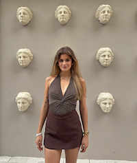

Mi presento

Hobby
I miei hobby preferiti sono:
Identità
Mi chiamo Kristina Matola, ho 24 anni e sono nata in aprile — il mese in cui la vita rinasce, in cui tutto si risveglia con una nuova luce. Forse per questo porto dentro di me una primavera eterna: una sete di scoperta, di significato e di bellezza.
Sono cresciuta tra culture diverse e oggi studio Comunicazione Integrata per le Imprese e le Organizzazioni presso l’Università di Udine, dopo aver conseguito una laurea in Psicologia in Ucraina.
Ho sempre sentito che la comunicazione è molto più di uno scambio di parole: è un incontro, una direzione, una cura.
“La comunicazione fa la relazione. La relazione fa la vita.”
Il Viaggio come Essenza della Vita
Viaggiare per me non è un semplice spostarsi: è un atto d’amore verso il mondo, verso gli altri e verso me stessa.
Credo che la felicità esista davvero solo quando viene condivisa. La gioia che non condividi perde luce, perde senso.
Per questo viaggio: per vedere, per capire, per sentire la vita da prospettive diverse. Ogni nuova città è una nuova versione di me. Ogni nuovo Paese è un frammento di anima che si aggiunge al mio cammino.
Quando arrivi in un posto nuovo, trovi anche una parte nuova di te. Scoprendo nuovi mondi, inizi anche a capire ciò che ti mancava nel luogo da cui provieni. Anche quando ritorni due o tre volte nella stessa città, quella città non ti accoglie mai nello stesso modo. Perché tu non sei mai la stessa. Ogni viaggio è un nuovo incontro con te stessa.
Osservare per Capire
Sono un’osservatrice profonda. Mi piace guardare il mondo, le persone, i dettagli, le sfumature. E credo che: “Secondo me l’osservatore è un preservatore.”
Chi osserva conserva emozioni, storie, significati. È attraverso l’osservazione che imparo, che cresco, che creo.
Un Cuore Multiculturale
Parlo più lingue, amo studiare culture diverse e costruire ponti tra le persone. Credo che la comunicazione interculturale possa salvare la vita, perché apre spazi nuovi, scioglie le paure, unisce ciò che sembra distante.
Dentro di me convivono più mentalità, più tradizioni, più colori. Sono aperta al mondo e sento che anche il mondo è aperto a me.
Creatività come Respiro
La creatività è una parte essenziale della mia identità. Scrivo racconti, poesie, pensieri spontanei. Dipingere mi permette di trasformare emozioni in forme e colori. La musica è un rifugio, un luogo dove ritrovo me stessa.
Amo guidare — specialmente d’estate — perché la strada mi dà un senso di libertà infinita. Amo le stelle, perché mi ricordano che tutto è mistero, tutto è possibilità. Credo profondamente che nulla accada per caso: ogni evento arriva quando deve arrivare.
Percorso Accademico e Professionale
La mia formazione è multidisciplinare: psicologia, comunicazione, turismo, lingue ed economia. Questi percorsi diversi mi hanno insegnato a vedere la complessità come una ricchezza, non come un ostacolo.
Lavoro nel campo della brand communication e del marketing esperienziale, creando connessioni autentiche tra persone, emozioni e idee. Svolgo anche il ruolo di brand ambassador, occupandomi di comunicazione visiva e sensoriale.
Attualmente sto sviluppando un progetto web dedicato alle persone anziane, con l’obiettivo di promuovere attività culturali e creative che favoriscano inclusione e benessere sociale.
Il Mio Impegno nel Mondo
Partecipo a iniziative giovanili, frequento seminari informativi e credo che il futuro appartenga a chi non ha paura di muoversi, imparare e cambiare.
Per me la vita è movimento. E il movimento è amore verso se stessi e verso ciò che ci circonda. Bisogna vivere il mondo, non solo guardarlo.
In Sintesi
Sono una persona che cerca il senso nelle cose piccole e grandi. Una ragazza che viaggia per trovare nuove parti di sé. Un cuore creativo che vede nel mondo una poesia in continua trasformazione.
Una mente aperta che crede nelle relazioni, nella comunicazione e nella bellezza dell’incontro umano. Io guardo il mondo. Il mondo guarda me. E insieme ci riconosciamo.